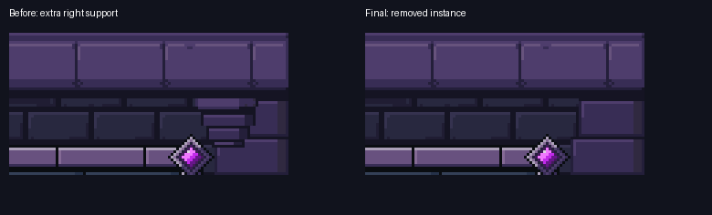
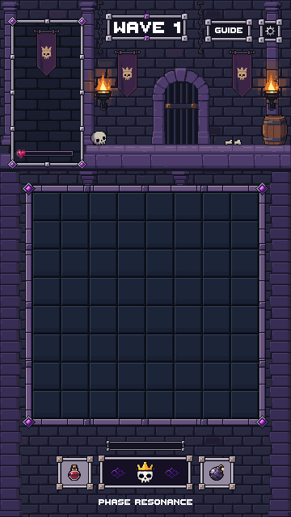
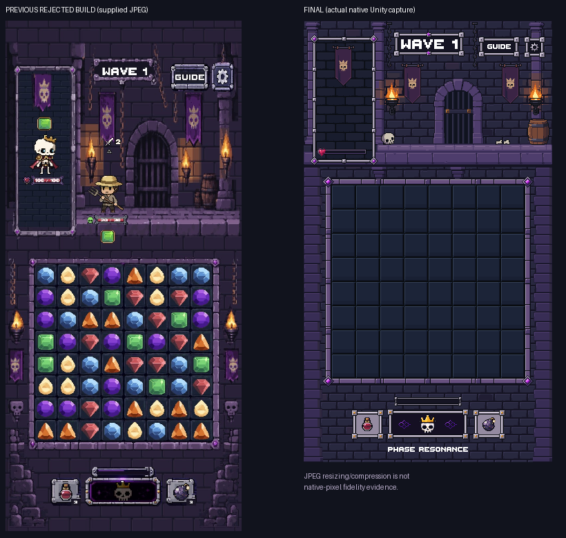
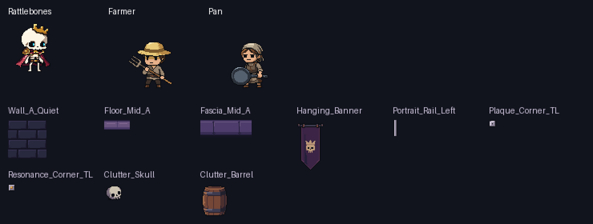
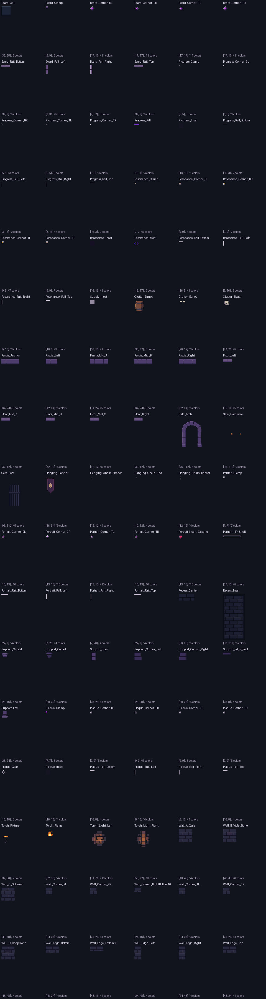
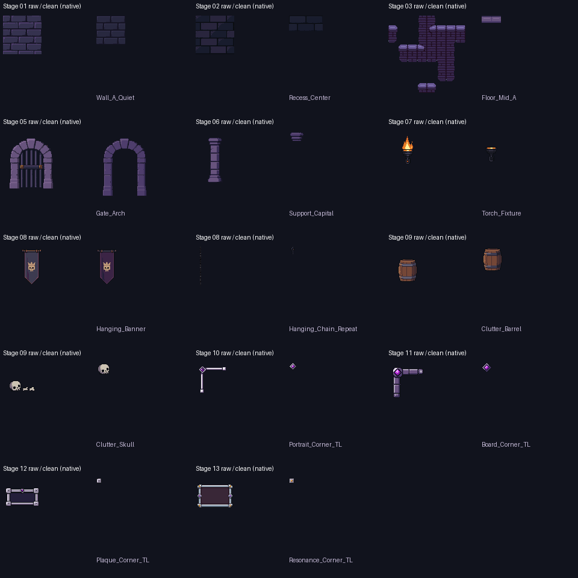

Safe area and source-pixel evidence
Full odd-size safe-area capture · Mask overflow result · Exact pixel checks


Stage 15 complete. The highlighted right support has been removed. All 102 approved artworks remain unchanged. These are captures from the isolated art-only Unity scene.
Final composition awaits your review. Production integration and merge have not started.
Full handoff · Asset manifest · Generation ledger · Unity validation receipt
Native 1× by default. Enlargement uses nearest-neighbor pixels.

Only 267 rendered pixels changed, all inside the removed instance. The source sprite and other supports were preserved.
The meter fills only for this QA demonstration. This is not gameplay or a new production animation; the final scene retains its empty meter.

Full odd-size safe-area capture · Mask overflow result · Exact pixel checks
The old image is a historical JPEG. Its scaling/compression is not native-pixel evidence. Characters and gems are absent because this preview is art-only.



